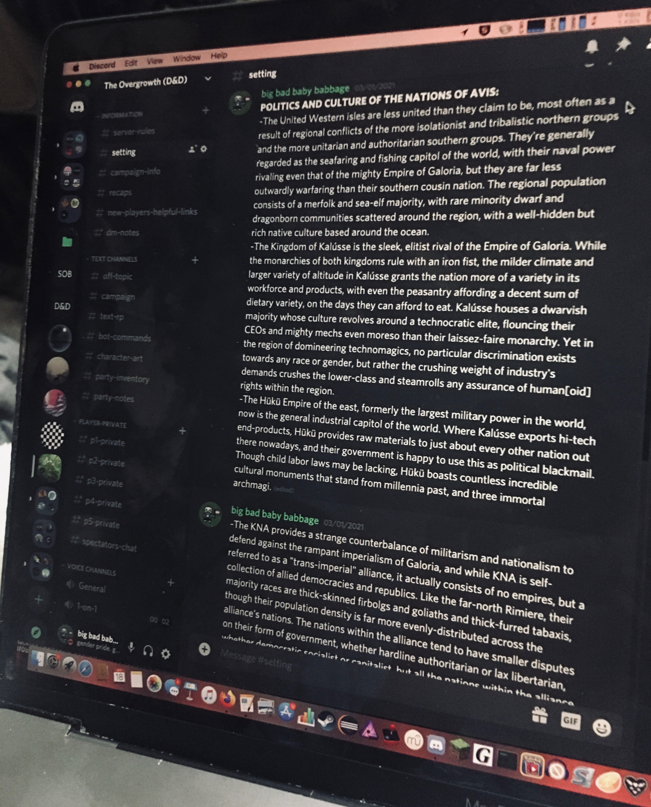

Somewhere, in another age...
Posts and other material for BCORE 120 C (Art of Myth)
Other Worlds
The art of being a homebrew author, and the necessary resulting god complex.
17 April, 2020

This is Avis. A Pangaea-like megacontinent that takes up almost half its planet’s surface, Avis represents a very different outcome from a not-so-different beginning from our own world. The setting diverges from our own in the year 1996, where scorned gods of old go to war with mortals in an event that would become known, befittingly, as the first Ragnarök event. With the fall of gods in charge of earthquakes and plate tectonics, the continents of the world morphed into one giant landmass; with the fall of gods in charge of life, most of the world’s population died out; with the fall of gods in charge of technology, mankind was technologically stunted back hundreds of years. Yet the few survivors, both god and man alike, pulled through, and built for themselves separate, not-so-codependent societies this time around.
This is also Avis. A Discord-based Dungeons & Dragons campaign taking place in the setting of Avis in the year 973 AR (After Ragnarök).
Over the years, countless content creators have crafted their own original worlds for Dungeons & Dragons, from Ravnica to the Sword Coast. Certainly, one could simply draw a world map and be done with it, but fleshing out a home-brew setting takes far more effort, from designing characters and nations to making battle maps of prominent locations. The result, though, is all too satisfying; a world of your own creation, completely under your control. A tiny, imaginary reality in which you are God, and by no means do you have to be a kind or good god.
I hope, at the very least, other writers can relate to developing a bit of a god complex when they create a setting entirely their own. As long as it’s enjoyed in moderation, fantasizing about causing mass destruction or immeasurable human suffering to demonstrate the flaws of the world never hurt anyone. Perhaps the scribes of old who first wrote or crafted the epics that shape our culture- the epic of Gilgamesh, or the Mahabharata, or the Iliad- found enjoyment, too, in gazing through the window of their works into a world of stories their word held total control over.
Now, in other news, I’ve started a project. A project that’s going to take quite some time.
I recently learned of the website godchecker.com, which has a database of almost every god in every culture. Immediately, I thought- okay, how do I import this database? Because, believe it or not, I am a statistician by hobby, and once I get my grubby hands on a dataset like this, there is so much analyzing to be done.
I may have limited programming abilities, thought, but what I don't know how to do (yet) is make a bot that visits webpages in succession and reads in very specific parts of the website’s data. So I’ve taken it upon myself to go through and write down all the gods manually.

Alright, that’s a lot of pantheons, but if it’s only about thirty-or-so gods each, this shouldn’t be too much of an issue-

Oh.

Oh no.

Oh dear.

So, this is where I am now… certainly not as far as I could be, but entering in each and every god’s name manually is a hassle and a half. I’m going by names first so that I don’t have to open individual pages of each god yet, but once I’ve gotten all the names down, I will be doing so. My main goal is to quantify the general alignment and gender of each deity or deity-like figure as a means to analyze gender roles in mythology. At the top, where you see “condition for including groups,” I mean small groups such as the Furies or Moirai, not whole pantheons themselves. If I can get this done by the end of the quarter, it’d be amazing, but I don't think I will- either way, though, I’ll provide updates in the future regarding my progress here!
See ya next time!